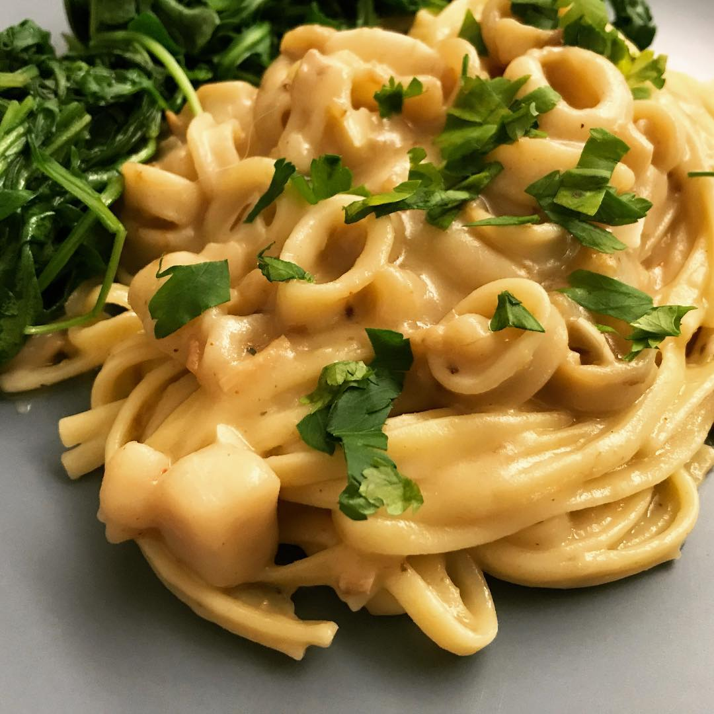

Alice Q. Wong
Interaction Designer. User Experience Engineer.
I invent recipes

Our journey today
How can we empower...
Scientist to program hardware
at Stony Brook's Neuroscience Dept.
Developers in collaborating with teammates
with Dark
~
Check-in on time
~
Developers pinpoint errors in their code
in Dark